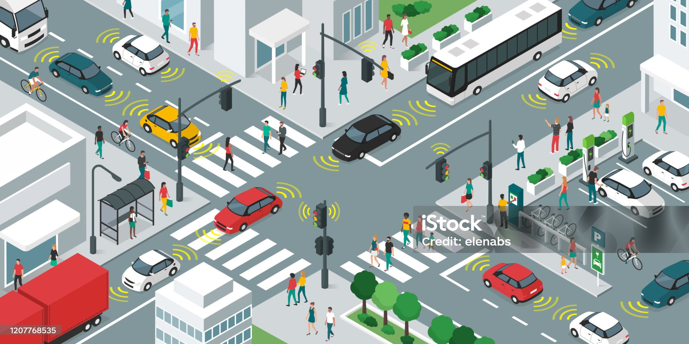

Electric Buses

Our electric buses are a key part of the public transportation system. They are powered by renewable energy sources, offering zero-emission transit and a comfortable ride across the city. With real-time tracking and smart scheduling, these buses ensure quick and efficient transport.
Autonomous Cars

Los Santos has embraced the future with autonomous, self-driving cars. These cars are integrated with the city’s smart traffic management system to provide smooth, accident-free travel. Riders can book autonomous cars from their smartphones, making it a hassle-free experience.
Bike Sharing

For shorter distances, our bike-sharing service is a great way to move around the city. With docking stations at multiple locations, residents and visitors can rent bikes easily. The bikes are regularly maintained and come with a built-in GPS for navigation.
Smart Traffic Lights
The city’s traffic lights are connected to a central AI system that monitors real-time traffic data. By adjusting the timing of lights dynamically, the system reduces congestion and optimizes traffic flow, ensuring that drivers experience minimal delays on the road.